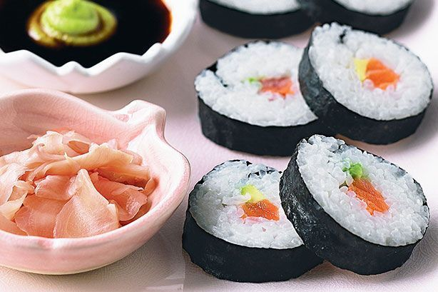

Sushi

Description
If you’re new to making sushi - one of Japan's most famed dishes - this is a great basic recipe to start with. You really only need a few ingredients to make it, including sushi rice (vinegared rice), nori sheets, fresh salmon and avocado.
Our Digital Food Director Amira Georgy recently retested this recipe (see more of her notes below) and confirmed what many of our members have been saying for years: it’s so simple, works every time and is a great base for adding different fillings or trying variations.
Her top tip: use a super-sharp knife! Yes, while making the sushi rice or rolling the sushi might seem like the hard parts, it’s actually the cutting which is many people’s downfall. Using a super sharp knife will not only help you cut beautifully thin slices of fish, but it will prevent you from squashing the sushi rolls as you cut them and losing that distinct round shape. Using a damp cloth or towel to wipe the blade clean between cuts helps, too.
If you love sushi, we think you'll love our collection of sushi (and sushi-related) recipes, including our easy salmon sushi bake.
Ingredients
- 2 1/2 cups (540g) koshihikari rice
- 3 3/4 cups (935ml) cold water
- 1/2 cup (125ml) rice vinegar
- 2 tbsp caster sugar
- 1/2 tsp salt
- 6 nori sheets
- 200g fresh salmon, cut into 1cm-thick batons
- 1 avocado, halved, stoned, peeled, thinly sliced
- Light soy sauce, to serve
- Wasabi paste, to serve
- Pickled ginger, to serve
Steps:
- Place the rice in a sieve. Rinse under cold running water, to remove any excess starch, until water runs clear. Place the rice and water in a large saucepan, covered, over high heat. Bring to the boil. Reduce heat to low and cook, covered, for 12 minutes or until all the water is absorbed. Remove from heat. Set aside, covered, for 10 minutes to cool slightly.
- Combine the vinegar, sugar and salt in a small bowl. Transfer the rice to a large glass bowl. Use a wooden paddle to break up rice lumps while gradually adding the vinegar mixture, gently folding to combine. Continue folding and fanning the rice for 15 minutes or until rice is cool.
- Place a sushi mat on a clean surface with slats running horizontally. Place a nori sheet, shiny-side down, on the mat. Use wet hands to spread one-sixth of the rice over the nori sheet, leaving a 3cm-wide border along the edge furthest away from you.
- Place salmon and avocado along the centre of the rice. Hold filling in place while rolling the mat over to enclose rice and filling. Repeat with remaining nori, rice, salmon and avocado.
- Use a sharp knife to slice sushi widthways into 1.5cm-thick slices. Place on serving dishes with soy sauce, wasabi and pickled ginger, if desired.